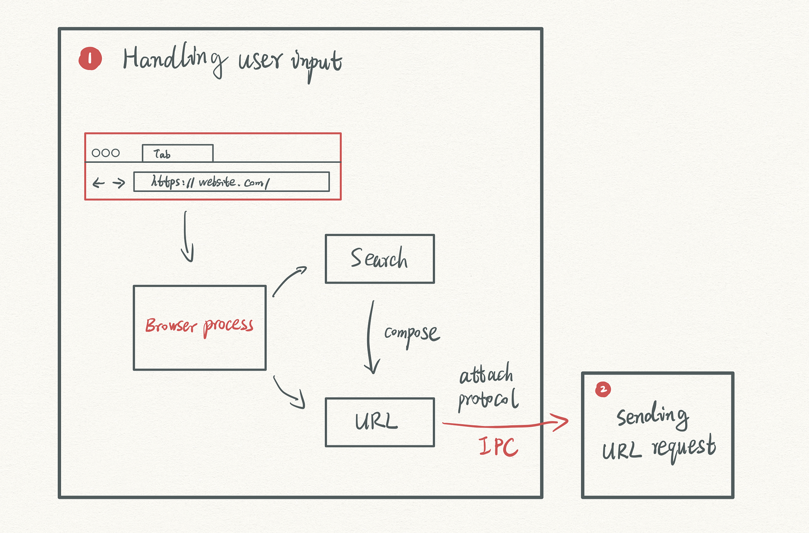

Definisi
Browser adalah aplikasi yang digunakan untuk mengakses, menampilkan, dan berinteraksi dengan konten di internet. Contohnya adalah Google Chrome, Mozilla Firefox, dan Microsoft Edge.
Cara Kerja
Browser bekerja dengan cara mengirim permintaan HTTP/HTTPS ke server, menerima respon, lalu memproses HTML, CSS, dan JavaScript untuk ditampilkan dalam bentuk antarmuka visual.
